CS 463G & CS 663
(Intro to) AI
Lecture 17: Propositional Inference
Fall 2026
Can the Robot Conclude It May Move?
For this robot, define:
- B: the battery is ready.
- C: the corridor is clear.
- M: movement is permitted.
It knows B and the rule (B\land C)\rightarrow M.
Must M be true, must it be false, or is it undetermined?
Facts, Rules, and a Query
A knowledge base (KB) is a collection of sentences assumed true.
| Fact |
B: the battery is ready |
| Rule |
(B\land C)\rightarrow M |
| Query |
Does M follow from these sentences? |
All sentences must hold together:
\text{KB}=B\land\bigl((B\land C)\rightarrow M\bigr)
Inference finds consequences of the encoded facts and rules. It does not verify that a sensor report is correct.
Assignments and Models
An assignment gives every atom T or F. A model of the KB is an assignment that makes every KB sentence true.
\text{KB}=B\land\bigl((B\land C)\rightarrow M\bigr)
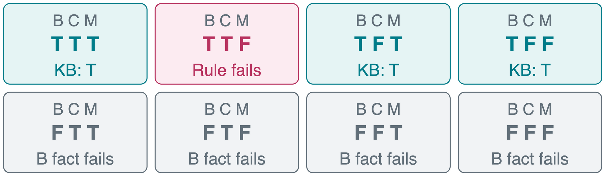
The KB leaves three possible worlds. T = true, F = false.
Entailment
\text{KB}\models\alpha
Read: “The KB entails \alpha.” The query \alpha is true in every model of the KB.
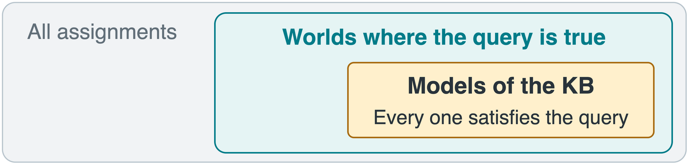
To disprove entailment, find one world where the KB is true and the query is false.
The Robot’s Permission Is Undetermined
The three models of B\land((B\land C)\rightarrow M):
A countermodel satisfies the KB but makes the query false.
\text{KB}\models B: all three models have B=\text{true}.
\text{KB}\not\models M: model 3 is a countermodel.
\text{KB}\not\models\neg M: model 1 is a countermodel.
Not entailed does not mean false. The KB permits both values of M.
Entailment as a SAT Test
The Boolean satisfiability problem (SAT) asks whether a formula has a satisfying assignment.
\text{KB}\models\alpha
\quad\Longleftrightarrow\quad
\text{KB}\land\neg\alpha\text{ is unsatisfiable}
| Has a satisfying assignment |
A countermodel exists: \alpha does not follow |
| Has no satisfying assignment |
\alpha follows from the KB |
This is refutation: assume the conclusion is false and look for a contradiction with the KB.
A consistent KB has at least one model. Check this first: C\land\neg C has none and entails every query in classical logic.
Model Checking
Conceptual pseudocode: enumerate complete truth assignments.
def entails(kb, query):
symbols = symbols_in(kb, query)
for model in all_assignments(symbols):
if evaluate(kb, model):
if not evaluate(query, model):
return False
return True
symbols_in: collect distinct atoms from both inputs.all_assignments: enumerate all 2^n assignments for n atoms.evaluate: apply the connectives’ truth tables.
Why is return True after the loop?
One countermodel gives False. True requires exhausting the loop.
Entailment and Derivation
| \text{KB}\models\alpha |
True in every KB model: a statement about meaning |
| \text{KB}\vdash\alpha |
Derived by our proof rules: a statement about a proof |
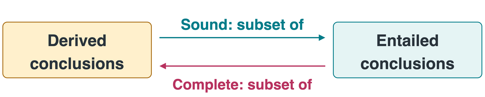
Sound: every derived conclusion is entailed. Complete: every entailed conclusion can be derived.
Modus Ponens and Modus Tollens
These are inference rules: patterns that derive a conclusion from known premises.
Modus Ponens
\frac{P\rightarrow Q\qquad P}{Q}
The premise P holds, so the rule requires Q.
If the battery is ready, a light is on. The battery is ready. Therefore the light is on.
Modus Tollens
\frac{P\rightarrow Q\qquad\neg Q}{\neg P}
If Q is false, P cannot hold without violating the rule.
The same rule holds, but the light is off. Therefore the battery is not ready.
Knowing Q and P\rightarrow Q does not establish P. The light might have another power source.
Conjunctive Normal Form
Conjunctive normal form (CNF) is an AND of clauses.
(P\lor\neg Q)\land(Q\lor R)\land\neg R
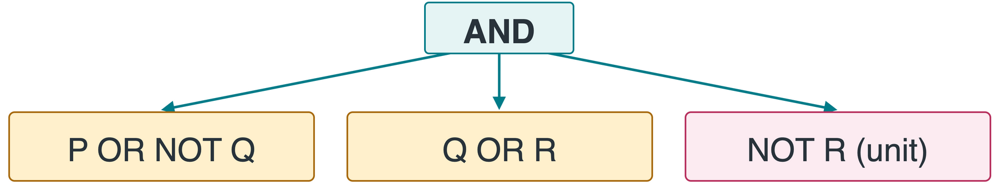
| Literal |
An atom or its negation, such as P or \neg Q |
| Clause |
An OR of literals, such as P\lor\neg Q |
| Unit clause |
Just one literal, such as \neg R |
CNF Conversion, Step by Step
Convert \neg(P\rightarrow Q)\lor R without changing its models.
| 1. Remove the implication |
\neg(\neg P\lor Q)\lor R |
| 2. Move NOT inward |
(P\land\neg Q)\lor R |
| 3. Distribute OR over AND |
(P\lor R)\land(\neg Q\lor R) |
The distributive law used in step 3:
X\lor(Y\land Z)\equiv(X\lor Y)\land(X\lor Z)
The result has two clauses. When R=\text{false}, both forms require P=\text{true} and Q=\text{false}.
CNF Practice: One Clause or Two?
Convert both formulas. First remove the implication.
One Premise, Two Consequences
P\rightarrow(Q\land R)
\neg P\lor(Q\land R) \equiv(\neg P\lor Q)\land(\neg P\lor R)
Two clauses: P requires Q and also R.
Two Conditions, One Consequence
(P\land Q)\rightarrow R
\neg(P\land Q)\lor R \equiv\neg P\lor\neg Q\lor R
One clause: only P and Q together require R.
The position of AND matters. Negating an AND and distributing over an AND are different steps.
Resolution
Resolution combines two clauses containing a complementary pair, P and \neg P.
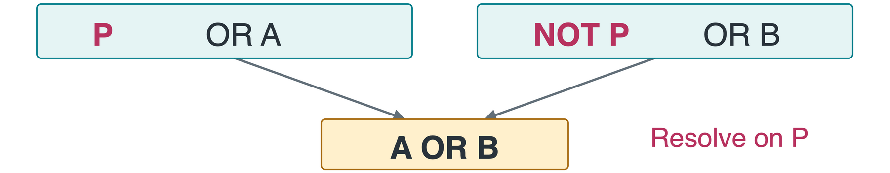
P is the pivot atom. A,B are the remaining disjunctions. Add the derived resolvent; keep both parents.
| P=\text{false} |
The first clause forces A |
| P=\text{true} |
The second clause forces B |
Either way, A\lor B is true. Resolution is sound.
Unit Resolution and the Empty Clause
A unit clause has only one literal, so resolving can leave a shorter clause or no literals at all.
One Literal Remains
\frac{P\qquad\neg P\lor Q}{Q}
The fact P eliminates \neg P. The remaining clause is Q.
No Literals Remain
\frac{P\qquad\neg P}{\bot}
The empty clause, written \bot, cannot be true under any assignment.
Deriving \bot proves the starting clauses cannot all hold together.
Reachability by Refutation
L: left route open. R: right route open. G: the goal is reachable.
\text{KB}=(L\lor R)\land(L\rightarrow G)\land(R\rightarrow G)
To prove G, add \neg G and convert to clauses:
| 1 |
L\lor R |
At least one route is open |
| 2 |
\neg L\lor G |
L\rightarrow G |
| 3 |
\neg R\lor G |
R\rightarrow G |
| 4 |
\neg G |
Negated query, added for the proof |
A Resolution Proof, Step by Step
Numbers identify clauses. Each new clause records its parents and pivot.
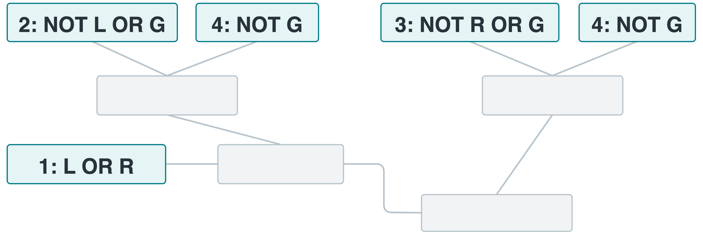
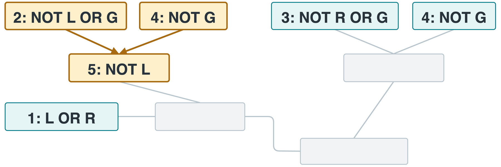
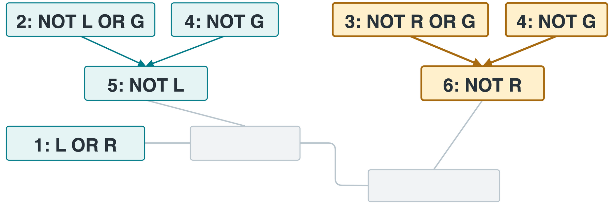
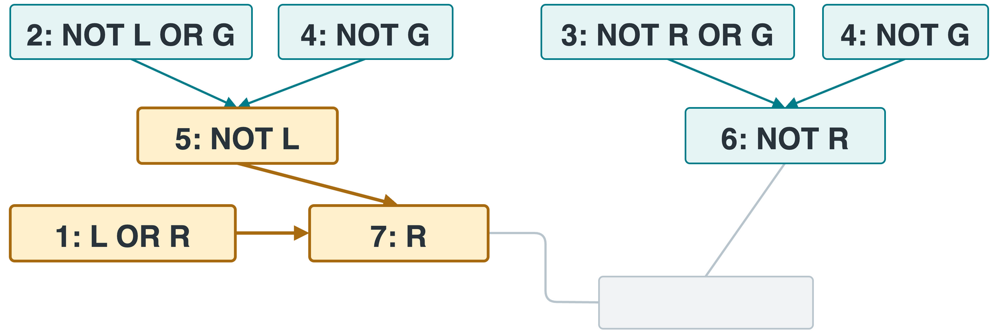
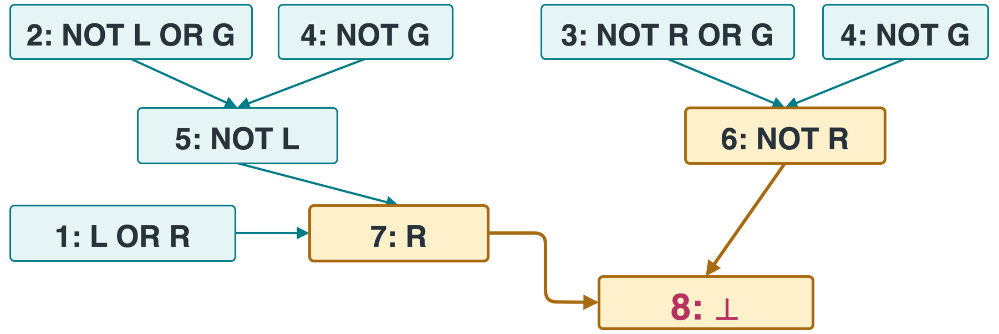
5: resolve 2 and 4 on G to get \neg L.
6: resolve 3 and 4 on G to get \neg R.
7: resolve 1 and 5 on L to get R.
8: resolve 6 and 7 on R to get \bot. Thus \text{KB}\models G.
Resolution Uses One Complementary Pair
Consider P\lor Q and \neg P\lor\neg Q.
Can we cancel both P,\neg P and Q,\neg Q to conclude \bot?
No. P=\text{true},Q=\text{false} satisfies both parent clauses.
Resolve only on P:
\frac{P\lor Q\qquad\neg P\lor\neg Q}{Q\lor\neg Q}
The resolvent is a tautology, not a contradiction. A sound rule cannot derive \bot from satisfiable parents.
Unit Propagation
A unit clause forces its only literal to be true. Substitute that assignment and repeat.
For the route clauses \{L\lor R,\ \neg L\lor G,\ \neg R\lor G,\ \neg G\}:
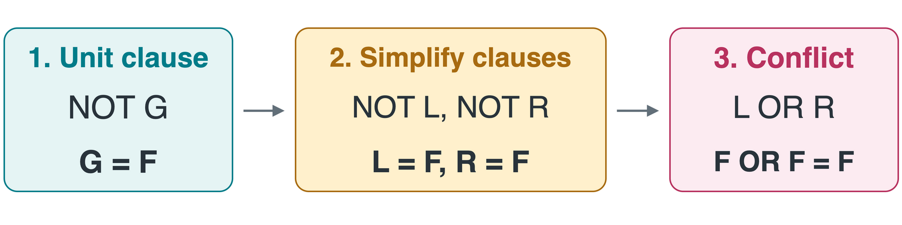
Like constraint propagation, forced assignments reduce search. If they do not decide the formula, branching may still be needed.
New Facts Change the Robot’s Conclusions
B: battery ready. C: corridor clear. M: movement permitted.
Original KB: B and (B\land C)\rightarrow M.
The rule becomes \neg B\lor\neg C\lor M. Resolving with B gives \neg C\lor M.
Consider these separate updates to the original KB:
Add C: Does M Follow?
\frac{\neg C\lor M\qquad C}{M}
Yes. The rule now has both required conditions.
Add \neg M: Does \neg C Follow?
\frac{\neg C\lor M\qquad\neg M}{\neg C}
Yes. A clear corridor would contradict the rule and known facts.
The original KB left M undetermined. An added fact removes possible worlds.
Takeaways
- Entailment: the query holds in every KB model.
- Countermodel: a KB model where the query is false.
- CNF: an AND of clauses, each an OR of literals.
- Resolution: use one complementary pair and keep the other literals.
- Refutation: derive a contradiction from the KB plus the negated query.
An unknown conclusion needs more information. “Not entailed” is not the same as “false.”
Asset credits